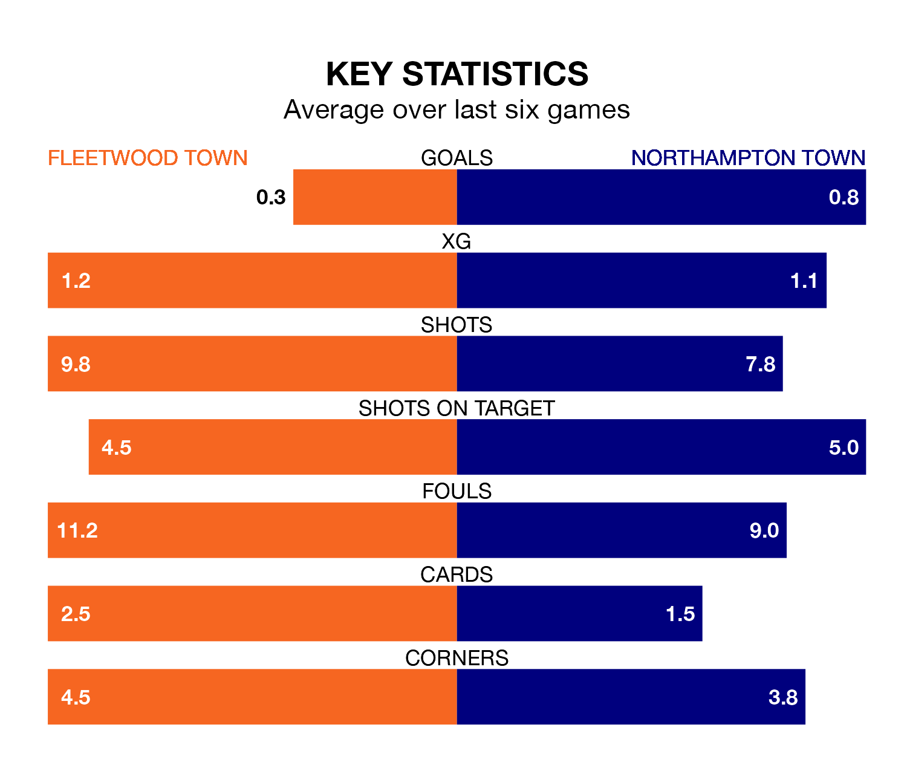

Fleetwood Town welcome Northampton Town to the Highbury Stadium on Saturday looking to pick up points to end their three-game losing streak.
Fleetwood's struggles have left them with just three points from their last six EFL League One matches, while their opponents have earned nine from a possible 18.
Fleetwood are 23rd in the table after 42 games, of which they have won seven and drawn 13, earning 34 points.
Northampton are 11 places ahead of Fleetwood Town in 12th, with 17 wins and eight draws putting them on 59 points.
In the last 10 years, Fleetwood and Northampton have played each other on seven occasions. Fleetwood won three of them, Northampton two, and they drew twice.
On average, the Cod Army scored 1.0 goal and the Cobblers 0.7 in those matches.
Their last meeting was on December 9, when Northampton won 3-0 at home.
With 42 goals in 42 games so far this season, the Cod Army are scoring at below the league average rate with 1.0 goals per game. And they are conceding more than average, letting in 68 goals at a rate of 1.6 per game.
Northampton Town, meanwhile, are average scorers, with 1.3 goals per game. They have conceded 1.4 goals per game.
In Sam Hoskins, the Cobblers have one of the league's sharpest shooters so far this season. He has notched 15 goals in 36 appearances, to sit fifth in the scoring charts.
His goal rate of one every 189 minutes is quicker than that of Jayden Stockley, the hosts' top scorer with a goal every 235 minutes, and a total of nine goals in 36 games.
Fleetwood's last match was on Tuesday, a 1-0 loss against Blackpool.
Northampton beat Carlisle United 2-0 last time out, on April 6, with Ali Koiki and Kieron Bowie on the scoresheet.
Updated: 10:01 (UTC), 12/04/24